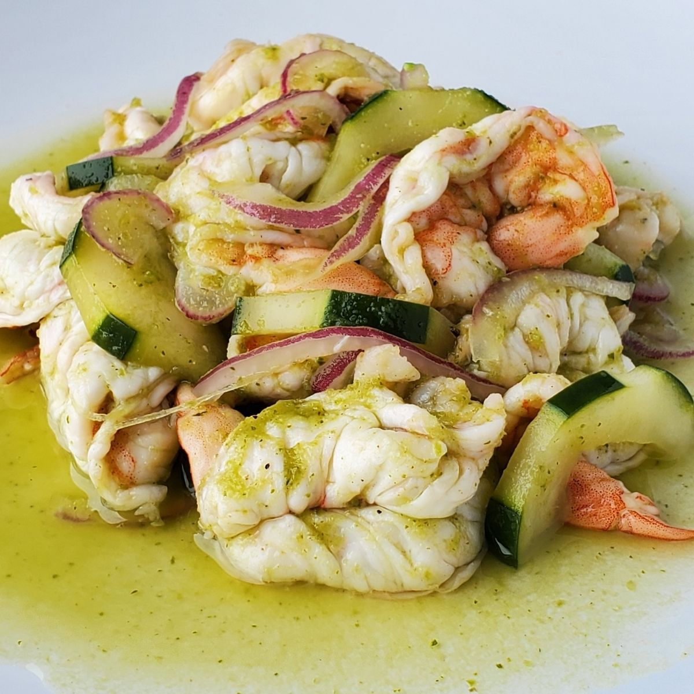

Aguachile

How to make authentic Aguachile (aka Camarones en Aguachile)
A flavorful Mexican appetizer, similar to ceviche, where shrimp is marinated in a lime juice, but with the addition of chiles and cilantro. A simple and delicious appetizer that is low-carb and keto friendly. Serve with cucumber, avocado and tortilla chips.
Ingredients
- Salt
- 1 Pound of Raw Shrimp
- 5 Large Limes
- 1 Red Onion
- 1 Garlic Clove
- 1 Cilantro
- 2 Jalepenos
- 1 serrano chili
- 1 Avocado
- 1 Cucumber
- Tortilla Chips or Mini Tostadas
- 1 Radish (optional)
Instructions
- Slice the shrimp in half (lengthwise) and remove any veins or tails. Place in a shallow serving dish in one layer if possible. Squeeze with enough lime to cover the shrimp- which will cook the shrimp, turning them slightly pink. Sprinkle with a little salt. Turn shrimp over as needed to cook both sides in the lime juice - this will take about 20-30 minutes.
- Thinly slice the red onion, place it in a bowl and season generously with salt. Pour just enough water to cover the onions.
- Make the Aguachile Marinade: Place the ingredients in a blender and blend until smooth, for a full minute, scraping down sides as necessary. If you have excess lime juice marinating the shrimp you can use some of this in the blender to make your ½ cup.
- Pour the aguachile marinade over the shrimp and toss to coat. Drain the onions and scatter them over top, mixing them in slightly. Add cucumber or radishes if you like. Refrigerate 30 minutes or up to 4 hours. This is best served cold!
- When ready to serve, taste ( I like to taste on a tortilla chip) adjusting the salt. Add avocado slices to the top, scatter with fresh cilantro and an optional drizzle of olive oil.
- Serve with tortilla chips or mini tostadas on the side.
- Enjoy!